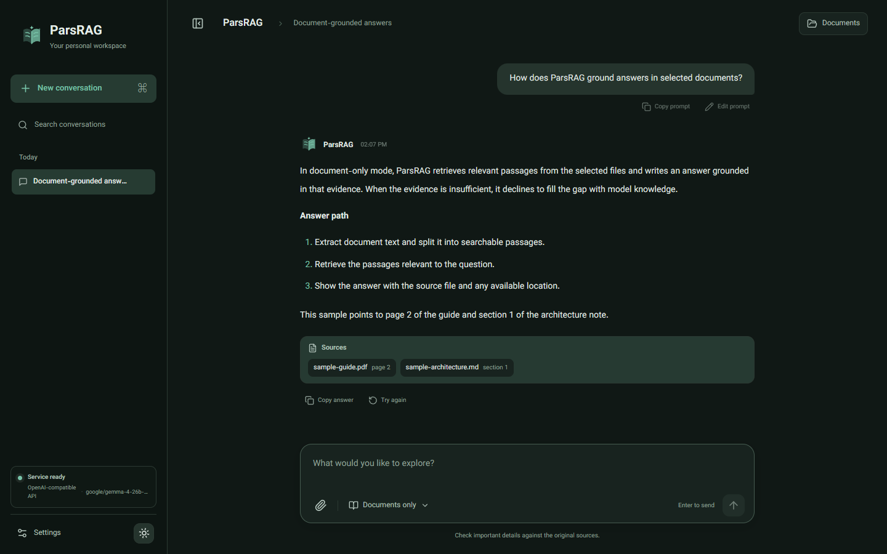
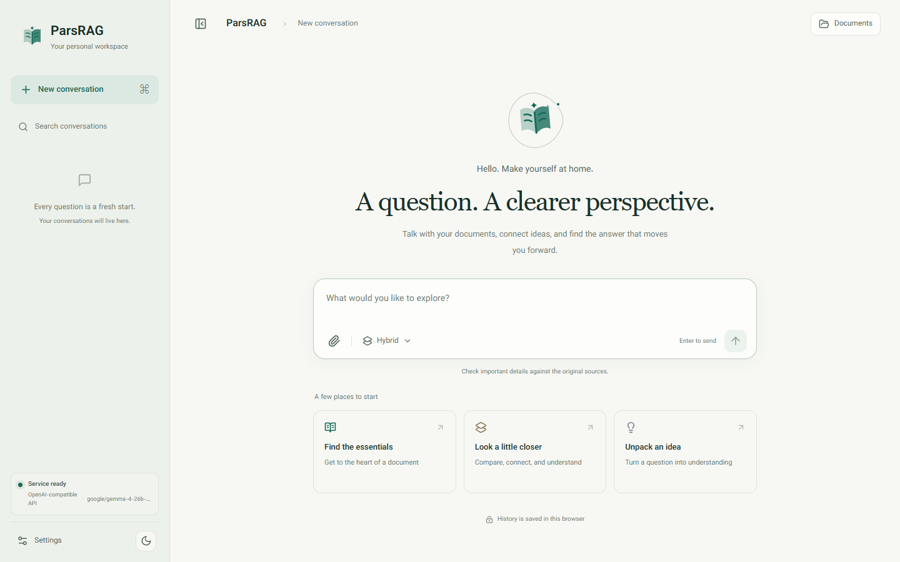
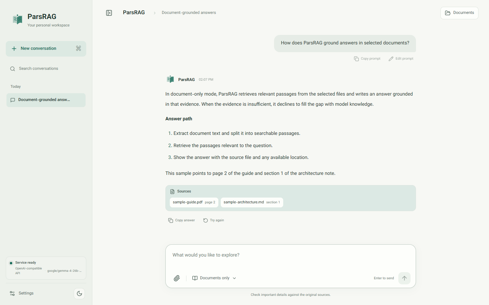
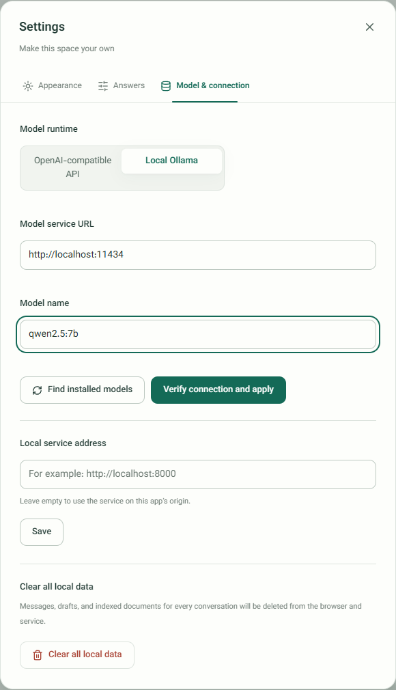

Offline Persian (Farsi) RAG for chatting with your documents
ParsRAG answers questions about Persian and English PDFs, Word and PowerPoint files, scans, and text, with a citation for every answer. Parsing, OCR, embeddings, and vector search stay on your workstation; answers come from a local LLM through Ollama or a model API you choose.

Built for Persian documents
Right-to-left text, Persian OCR, and multilingual embeddings are first-class, not afterthoughts.
Cited, traceable answers
Every answer lists the file plus page range, slide, paragraph, or section it came from.
Broad document support
PDF, DOCX, PPTX, images, Markdown, JSON, CSV, HTML, YAML, logs, and source code.
OCR where it matters
Persian and English Tesseract OCR for scanned pages, images, and pictures inside Office files.
Local-first by design
Embeddings and Qdrant vectors never leave the host. Remote model APIs require an explicit, disclosed opt-in.
Precise prompts
Mention files with @ to bind parts of a question to specific sources; use / for quick actions.
Runs on your hardware
CPU by default, with Docker Compose overlays for NVIDIA and supported AMD GPUs.
Three explicit answer modes
Choose how much the model may rely on its own knowledge.
| Mode | Retrieval | Model knowledge | Use it for |
|---|---|---|---|
| Strict | Required, with an evidence gate | Excluded by the prompt contract | Answers that must stay grounded in your documents |
| Hybrid | Required and reranked | May supplement evidence | Explanations and synthesis with document priority |
| LLM-only | Bypassed | Used directly | General chat unrelated to uploads |
Bilingual interface
The same workspace in English and Persian, light and dark.




Quick start with Docker
Requires Docker Engine with Compose and 8–16 GB RAM, depending on the model. The full guide covers API models, CPU, NVIDIA, and AMD.
git clone https://github.com/Pooria82/ParsRAG.git
cd ParsRAG
cp .env.example .env
docker compose --profile local-model up -d qdrant ollama
docker compose --profile local-model run --rm ollama-init
docker compose --profile local-model up -d --build appThen open http://127.0.0.1:8000. Read the installation guide, the architecture, and the data and RAG guide.